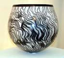

| Hanna Ashraf
Egyptian-born British studio potter
Hanna
Ashraf is an Egyptian-born studio potter resident in Britain.
Ashraf studied art and design at El-Minya College of Fine Art in
Egypt from 1986-1989 and theater design at Central St. Martins College
of Art & Design in London from 1991-1994. He began working with
clay in 1997 and established a studio in 1998. He has been a member
of the British Craft Potters Association since 1999.
Inspired by ancient forms and techniques, Ashraf hand-builds his
earthenware vessels which are burnished and then smoke-fired. Decorative
effects are achieved with the help of resist techniques.
Artist's Statement
Work is concerned with achieving the balance of creating ceramics
which are inextricably linked to the forms and techniques of the
ancient world yet utterly contemporary in their personality. I am
always excited by the prospects of the interaction between the precision
of my designs and the spontaneity of the fire. The technique of
Raku, smoke-fired ceramics poses many challenges, it is seemingly
simple yet one that is quite laborious and often fraught with difficulties.
One can never take the results for granted since a successful piece
is essentially the result of a collaboration between design and
chance, precision and spontaneity, artist and elements for it is
the flames which ultimately breath life into the work.

Technical Notes
Clay bodies: Earthstone, smooth white stoneware.
The form is started as a pinch pot then developed using slabs.
Once completed the form is refined with metal and rubber kidneys.
Burnishing is very important to the final result, I therefore meticulously
repeat the process until the desired surface is achieved . After
a biscuit firing to 1000 c, the piece is subjected to the smoke
firing using a variety of resist techniques, currently I am exploring
the technique of naked raku where the biscuit fired ware is covered
with a thick layer of slip,once dried a thin layer of glaze is brushed
on and the required pattern is incised through both clay and glaze
with a sharp skewer stick. Work would normally be fired to 850c
or until the glaze has matured. The piece is then removed to a reducing
chamber where it would be covered by sawdust . After cleaning a
layer of wax is applied to enhance and seal the surface.
Images and text courtesy Hanna Ashraf.
More Artists of the Week
More Articles
|
{kind=link}
{kind=link}
{kind=link}
{kind=link}
{kind=link}
{kind=link}